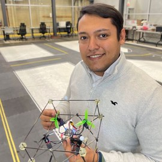
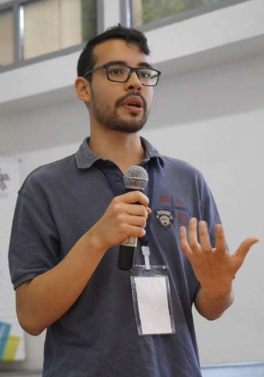
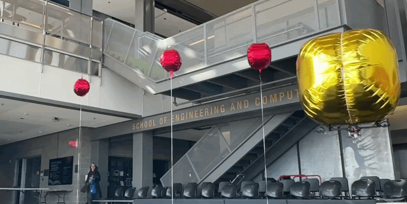
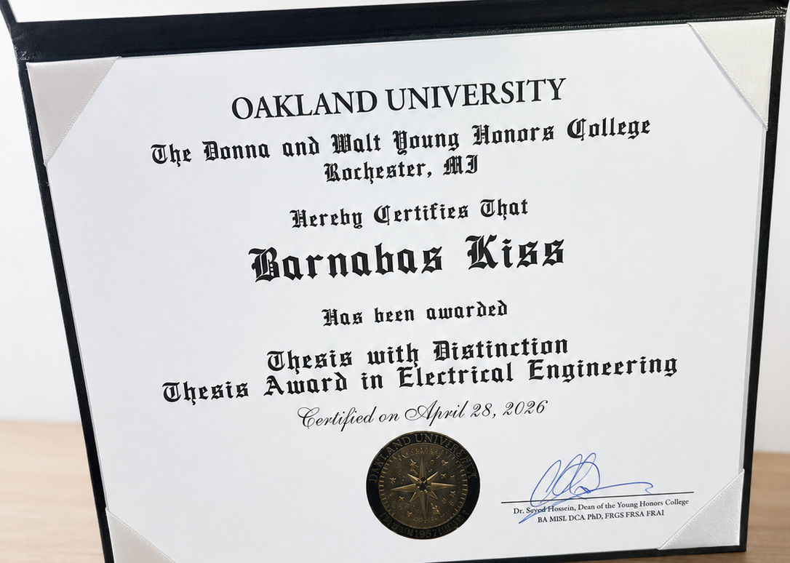

Mathematical foundations
We build explicit models of geometry, dynamics, contact, and uncertainty. Assumptions and operating conditions remain visible so that analysis supports interpretable design decisions.
ΔMARS LAB
Advancing autonomous robotics through cooperative coordination, physical interaction, and intelligent manipulation.
At ΔMARS Lab, we investigate how robots collaborate and interact with the physical world. From autonomous cable manipulation and robotic knotting to cooperative aerial transportation and blimp systems, our research combines modeling, perception, planning, and control to develop new capabilities for autonomous robots.
ΔMARS Lab studies cooperative robotics, physical interaction, and autonomous manipulation. We investigate how individual robots and teams coordinate their actions, manipulate objects, and establish useful physical relationships with their environments. Our research connects dynamics, control, perception, and planning across aerial and ground platforms, including multirotor vehicles, autonomous blimps, and heterogeneous robotic teams.
Cable-based manipulation and robotic knotting form a distinctive focus within this broader agenda. Cables, ropes, and knots are not only objects to manipulate: they can become mechanisms for establishing connections, distributing forces, securing payloads, and creating mechanical constraints. We investigate autonomous cable routing, hitch and knot formation, interlacing, tension regulation, and friction-based grasping alongside broader questions of contact-rich interaction and cooperative autonomy.
Our approach combines mathematical foundations, algorithms, and experimental systems. Models guide planning and feedback, while physical experiments reveal where assumptions need refinement. This cycle connects scientific understanding with robotic behavior and supports research beyond any single mechanism or platform. Directed by Dr. Diego S. D’Antonio, the laboratory is part of Oakland University’s Department of Electrical and Computer Engineering in Rochester, Michigan.
The symbol Δ (delta) represents incremental advances in robotic autonomy, physical interaction, and coordination that enable the development of increasingly capable multi-agent robotic systems.
Advance cooperative robotics and autonomous manipulation through modeling, perception, planning, control, and experiments, with a distinctive focus on cables, knots, and contact-rich interactions.
Enable robots to cooperate and exploit physical interactions—including cables, ropes, and knots—to accomplish complex manipulation and transportation tasks across aerial and ground platforms.
We build explicit models of geometry, dynamics, contact, and uncertainty. Assumptions and operating conditions remain visible so that analysis supports interpretable design decisions.
Perception, planning, and control work together. Measurements inform task decisions, and planned actions account for the forces and constraints that controllers must manage.
We use robot experiments to examine where models hold and where they fail. Measured behavior, reproducible procedures, and honest reporting guide the next iteration.
Enabling robots to manipulate flexible structures and exploit their mechanical properties.
We investigate how autonomous robots can manipulate cables, ropes, and other deformable linear objects to establish physical connections, secure objects, and perform complex manipulation tasks.
Our research explores autonomous hitch and knot formation, cable interlacing, tension regulation, contact mechanics, and friction-based grasping.
By combining mathematical modeling, planning, control, and experimental robotics, we seek to enable robots to exploit the mechanical properties of flexible materials for manipulation and cooperative transportation.
Potential applications: Aerial grasping, Object securement, Robotic assembly, Cooperative transportation, Manipulation in challenging environments.
Explore cable interlacing →How can autonomous multi-robot systems coordinate their actions and leverage contact dynamics and mechanical interactions with deformable linear objects—including cable tension, friction, and topological constraints—to enable complex manipulation capabilities beyond those achievable by individual robots?
Cables and knots can establish connections, distribute forces, secure payloads, and create mechanical constraints.
Project concepts and verified research records, with the current evidence stated for each.
This project investigates how multiple aerial robots arrange and interlace cables around an object to establish an attachment for lifting and transportation. It connects cable routing, contact and friction mechanics, and team coordination. Cable-based grasp formation offers a way to explore securement without relying on a conventional rigid gripper.
Explore projectThis project studies cooperative payload transportation when a cable can slide through an attachment on the load. Changing cable distribution couples robot motion, payload dynamics, and interaction forces. An author-posted preprint reports a dual-quadrotor system, geometry-based reference generation, and experimental demonstrations of the approach.
Explore projectThis project explores lightweight robotic blimps as platforms for studying selected aspects of cooperative capture and transportation. The research concept involves coordinated motion, interaction with moving objects, and cable-mediated handling. Blimp experiments can support controlled studies of these interactions; they do not reproduce true orbital microgravity dynamics.
Explore projectRobot motion alone may not reveal whether a cable is taut, slipping, or contacting an object. This research direction develops sensing and modeling strategies for cable interaction, including tension, angle, and contact geometry. The goal is to connect reduced-order interaction estimates with feedback control and manipulation decisions.
Explore projectThis exploratory direction combines active perception, scene understanding, and physical manipulation to search for and retrieve objects. A robot may need to move an obstacle before it can observe or grasp a target. We investigate how observations and actions can inform each other in a closed-loop autonomous process.
Explore projectExplore our research publications by year, publication type, and topic.
16 publications shown
No publications match these filters.

Principal Investigator
Assistant Professor · Electrical and Computer Engineering
Director, ΔMARS Lab · Oakland University
Dr. Diego S. D’Antonio is an Assistant Professor in the Department of Electrical and Computer Engineering at Oakland University, where he directs the ΔMARS Lab. He received his Ph.D. in Computer Science and Engineering from Lehigh University. His research focuses on autonomous and cooperative robotics, physical interaction, and robotic manipulation, with particular emphasis on aerial robotics, multi-robot systems, and cable-based manipulation. His work explores the integration of knot theory, contact mechanics, dynamics, planning, and control to enable autonomous grasping, object attachment, and cooperative transportation. His broader interests include contact-rich robotic interaction, autonomous blimps, and robotic systems for space applications. His research has received support from the Michigan Space Grant Consortium, and he is actively involved in student mentoring, robotics education, and STEM outreach.
Contact Dr. D’Antonio ↗
Ph.D. Student · Electrical Engineering · 1st year
Research focus: Cooperative Aerial Transportation · Multi-Robot Systems · Cable-Based Manipulation
Master’s Student
Research focus: Robotic Manipulation · Active Perception · Mechanical Search
Master’s Student
Research focus: Aerial Robotics · Modular Robotic Systems · Dynamics and Control
Electrical Engineering
Thesis: Toward Low-Cost Swarm LTA Vehicles: Development and Characterization of a Modular ESP32-Based Winch and Tension-Sensing System
Electrical Engineering
Thesis: UAV Thrust Bench Development for the Experimental Determination of Motor-Propeller Performance
Distinction: Thesis Award Distinction in Electrical Engineering
Profiles to be added.
Profiles to be added.
We combine mathematical modeling, algorithm development, and experimental validation to address challenging problems in robotics. Our research is driven by scientific curiosity, critical thinking, and hands-on experimentation. Students contribute to every stage of the research process, from developing ideas and building robotic systems to conducting experiments and communicating results. We foster a collaborative environment that values creativity, technical rigor, mentorship, and reproducible research.

Competition · November 2–6, 2026
ΔMARS Lab is organizing the first International Airship Racing at LARC (IAR–LARC), hosted at New Granada Military University. Teams will design and race autonomous lighter-than-air robots, putting perception, control, and flight autonomy to the test.
Competition details ↗
Research visits · September 24–October 2, 2026
Dr. Diego S. D’Antonio attended the NSF PI Meeting, presented at IROS 2026 in Pittsburgh, and concluded the trip with a robotics seminar at West Virginia University.
The lab gathered for a dinner as we geared up to welcome fall 2026.

Student achievement · April 28, 2026
Congratulations to undergraduate Electrical Engineering student Barnabás Kiss on receiving the Thesis Award Distinction in Electrical Engineering for his thesis, “UAV Thrust Bench Development for the Experimental Determination of Motor-Propeller Performance.”
We welcome inquiries from PhD and master’s students, undergraduate researchers, and potential collaborators interested in autonomous physical interaction.
Research may involve mathematical modeling, algorithm development, robot design, simulation, hardware development, experimental testing, and scientific writing. Publication goals depend on the project and its results.
Relevant backgrounds include control theory, applied mathematics, Python or C++, ROS 2, computer vision, embedded systems, mechanical design, electronics, optimization, and state estimation. You do not need all these skills. Technical curiosity, persistence, and a willingness to learn matter.
Email Dr. D’Antonio with:
Contact the director to discuss current opportunities. Funded positions are not advertised unless confirmed.
Department of Electrical and Computer Engineering
Oakland University
Rochester, Michigan, USA
Laboratory
Engineering Center, Room 450
Electrical and Computer Engineering ↗
Google Scholar, GitHub, LinkedIn, and lab collaboration profiles will be linked after confirmation.